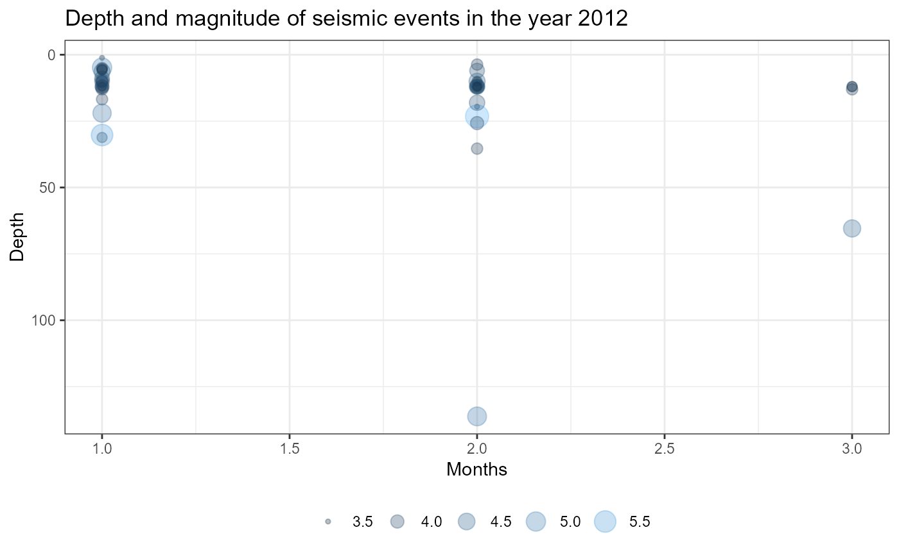

This function creates a graph of Month vs Depth for a specific year from the seismic catalog, with points that represent the magnitude_value_P
Depsism_Y(catalogYM, Y)Dotplot month vs depth
Catalog YM: The catalog with the year and the month separated
Y: Year that needs to be analyzed
#data from IGEPN
time_value <- c("2012-01-02 13:02:44.000", "2012-01-02 14:10:00.000", "2012-01-05 01:18:17.000", "2012-01-05 08:43:48.000", "2012-01-05 12:22:12.000", "2012-01-06 02:16:44.000", "2012-01-06 12:20:20.000", "2012-01-08 19:40:29.000", "2012-01-10 18:07:09.000", "2012-01-10 20:54:32.000", "2012-01-12 06:58:55.000", "2012-01-13 20:29:41.000", "2012-01-15 08:22:50.000", "2012-01-15 23:29:17.000", "2012-01-16 11:53:13.000", "2012-01-19 09:47:44.000", "2012-01-19 10:18:02.000", "2012-01-19 10:59:46.000", "2012-01-21 17:11:50.000", "2012-01-22 04:21:59.000", "2012-01-26 19:01:08.000", "2012-01-27 17:28:35.000", "2012-02-01 21:01:28.000", "2012-02-02 08:10:01.000", "2012-02-05 06:13:33.000", "2012-02-05 18:57:42.000", "2012-02-06 17:59:50.000", "2012-02-07 00:59:48.000", "2012-02-07 02:31:22.000", "2012-02-07 04:55:46.000", "2012-02-08 10:54:42.000", "2012-02-09 08:02:20.000", "2012-02-11 02:36:54.000", "2012-02-15 03:46:31.000", "2012-02-18 07:23:27.000", "2012-02-18 07:58:53.000", "2012-02-19 21:16:38.000", "2012-02-20 12:44:47.000", "2012-02-23 22:28:32.000", "2012-02-24 02:56:46.000", "2012-02-26 08:11:47.000", "2012-03-01 03:09:53.000", "2012-03-03 11:10:36.000", "2012-03-05 21:58:26.000", "2012-03-06 18:14:11.000")
depth_value <- c(10, 12, 5, 10, 1.17, 10, 12.83, 31.16, 4.85, 5.15, 6.34, 16.77, 12, 22, 8.9, 12, 30.25, 12, 10, 5.6, 12, 5.8, 10, 19.55, 3.71, 12, 12, 6, 10, 12, 23.21, 25.76, 10, 12, 18.07, 12, 35.36, 12, 12, 136.2, 12, 12, 13.04, 12, 65.42)
magnitude_value_P <- c(3.8, 3.8, 3.8, 3.9, 3.5, 3.8, 3.9, 3.7, 5, 3.7, 4.4, 3.8, 3.6, 4.8, 4.2, 3.6, 5.5, 4.1, 4.2, 3.7, 4, 3.7, 3.7, 3.5, 3.8, 4, 4.3, 4.2, 3.6, 3.8, 5.9, 4, 4.4, 3.7, 4.3, 4.1, 3.8, 3.6, 4.2, 4.9, 3.6, 3.7, 3.8, 3.7, 4.6)
year<- c(2012,2012,2012,2012,2012,2012,2012,2012,2012,2012,2012,2012,2012,2012,2012,2012,2012,2012,2012,2012,2012,2012,2012,2012,2012,2012,2012,2012,2012,2012,2012,2012,2012,2012,2012,2012,2012,2012,2012,2012,2012,2012,2012,2012,2012)
month<- c(01, 01, 01, 01, 01, 01, 01, 01, 01, 01, 01, 01, 01, 01, 01, 01, 01, 01, 01, 01, 01, 01, 02, 02, 02, 02, 02, 02, 02, 02, 02, 02, 02, 02, 02, 02, 02, 02, 02, 02, 02, 03, 03, 03, 03)
catalogYM <- data.frame(time_value = time_value, depth_value = depth_value, magnitude_value_P = magnitude_value_P, year=year, month=month)
# In this example, we will only see a short dotplot for three months of the year 2012
Depsism_Y(catalogYM, 2012)
